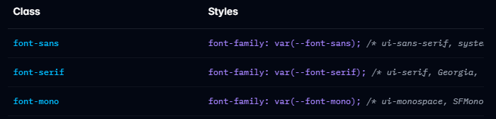
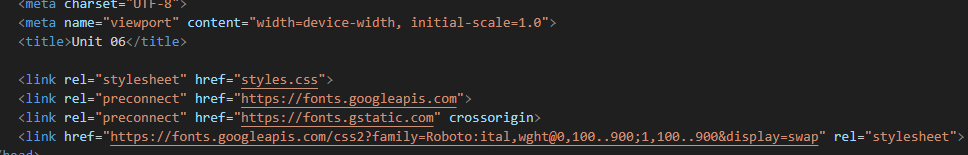
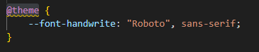
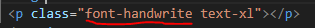
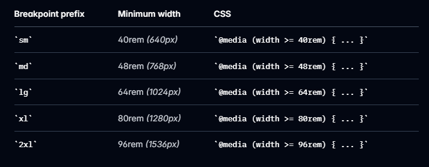
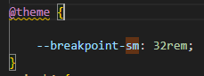
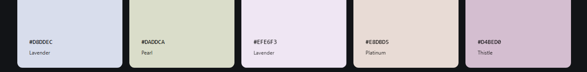
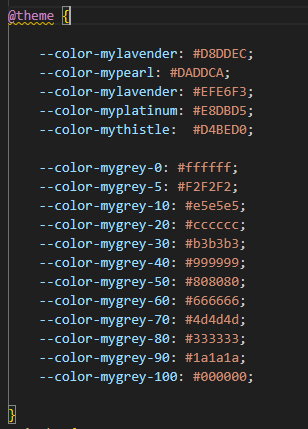
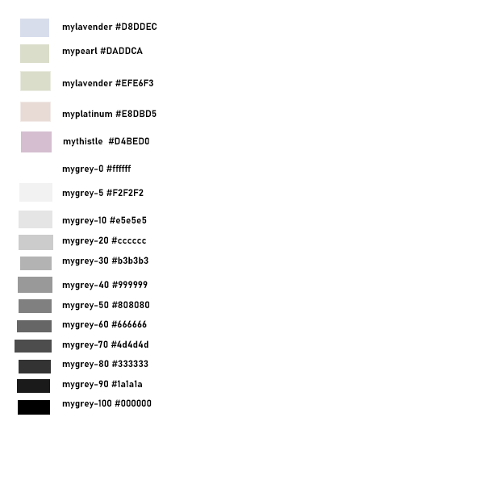
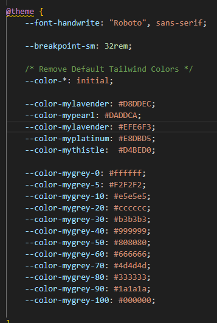

Overriding Tailwind Defaults
Font Family Overrides
Tailwind comes with three built-in font families (sans, serif and mono).
We can add our own Google fonts using a link in the html document head
We than add an addition font family variable in the source css file
In the HTML we add a class using the new font and variable name we created like this
When used, it would render like this example.
Breakpoint Overrides
Tailwind comes with 5 built in media query breakpoints for creating responsive designs.
You can override any of these if they are not breaking where you woiuld like by adding to the source css file. In this example I am changin the small break point from 40rem (640px) to 32rem (512px).
Color Overrides
Tailwind comes with many many default color that are not realy that useful. If we are working with a UX design team and they provide a set of colors, we can add them to your tailwind setup so these new colors are named and ready for use In this case, the UX team provided the color palette for our site.
I also like to have a series of grey colors for card borders, shadows, etc to compliment any color scheme I am using. So in addition to these colors, I am going to add a series of greys including black and white. These will also be added as variables in my source css file like this.
 These colors can be used in the same way as the default colors.
If I were to make changes to the font family, the breakpoints and colors, the source css file (in my case the input.css) would have all these modifications in side the @theme{}
